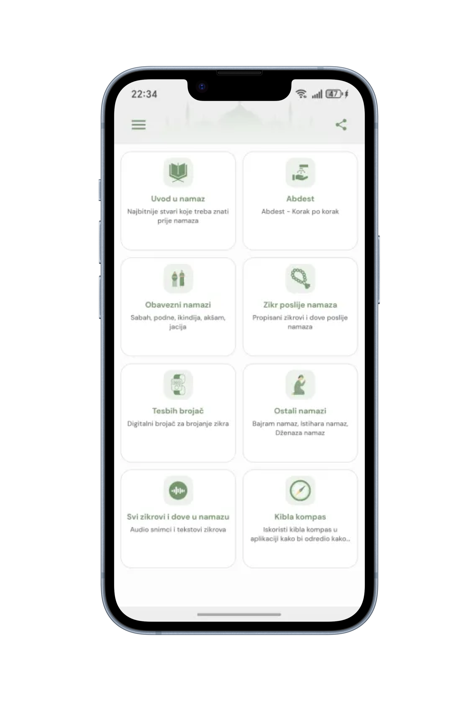

mNamaz Redesign
Redesign of the mNamaz app focused on simplifying the interface, improving visual clarity, and introducing tab bar navigation for a better user experience.
Comparison
Home
Before

After

Dhikr Counter
Before

After

Prayer (Salah)
Before

After

Process & outcome
The redesign focused on simplifying the interface and improving overall usability. The main challenge was a card-heavy Home screen without a clear navigation structure, which made it harder for users to quickly access key features. To address this, I reduced the number of cards and introduced a tab bar navigation, allowing users to access main sections more efficiently. I also refined the color system and adjusted illustration styles to better match the updated background and create a more cohesive visual experience. As a result, the interface became cleaner, more structured, and easier to navigate. The updated design improves content clarity, reduces visual clutter, and provides a more intuitive user experience.